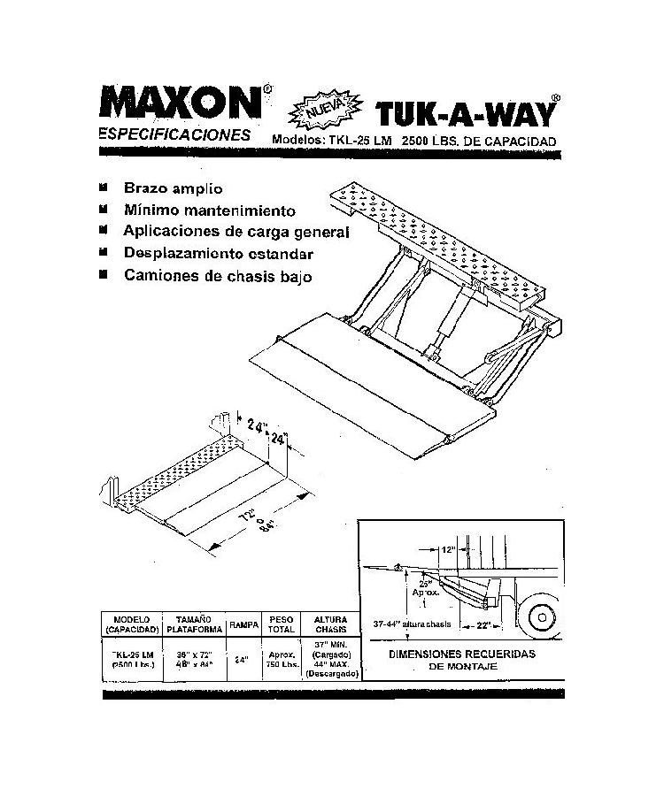

|
FICHA TÉCNICA
TECFOR |
 |
|
Plataforma elevadora de carga marca MAXON , modelo TKL-25 , plegable bajo carrocería , para montar sobre camión Capacidad máxima
: 2.500 lbs ( 1.134 kgs) Peso de la unidad : 750 lbs ( 336 kgs )
Grupo electrohidráulico : incluye motor-bomba para 12 ó 24 V, estanque y cubierta de protección. Comando de accionamiento lateral tipo joystick . Corta corriente para evitar uso por personal no autorizado . Fusible protector de sistema eléctrico. Base de plataforma se solda a cola de chasis de camión.
Nuevo : baja mantención , no requiere engrase , doble superficie de rodamientos Montaje a realizar en nuestra fábrica en 3 días . Garantía : 1 año desde su instalación , en nuestra empresa . Y recuerde : TECFOR tiene certificación ISO 9001 de su sistema de gestión de calidad .  |
|

|